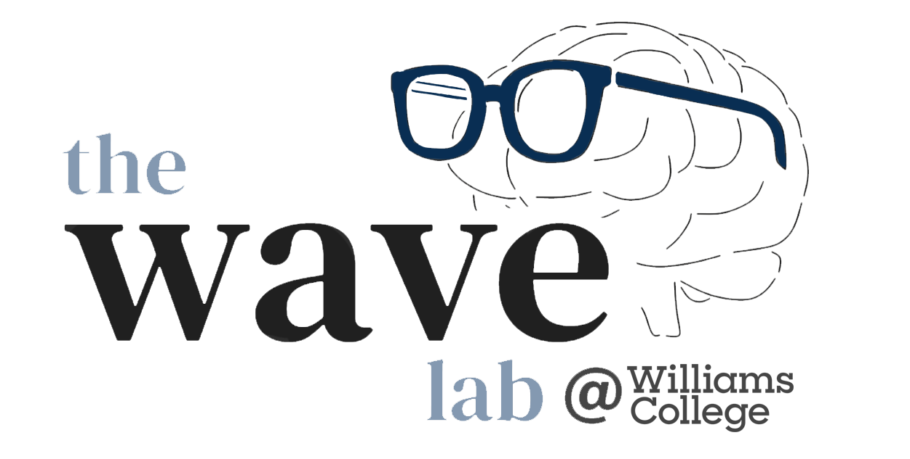

Welcome to the Wong Attention Vision & Encoding (WAVE) Lab!
Our lab explores visual perception and cognition — investigating the mental processes that underlie how we take raw visual input from the world (a mess of lines and colors) and make sense of it (e.g. forming representations of "objects" and "agents"), guiding our everyday function.
In short, our research delves into the (often) surprising answers to questions such as: "What do we actually see?" and "How do we even meaningfully parse the world in the first place?"
July 2025:
The WAVE Lab officially begins operation on campus, located in Wachenheim Science Center! Now recruiting undergraduate research assistants to begin in either Fall 2024 or Spring 2025. Learn more on our Join Us page.
July 2025:
The WAVE Lab website has been setup! We are excited to get the lab started and to get to know all the students (particularly in the classes that Kim will be teaching, Intro Psych and 221 Cog Psych).
Interested in joining the lab? Check out this page for more information.
Nulla facilisi morbi tempus iaculis urna id volutpat lacus. Vestibulum lectus mauris ultrices eros in cursus turpis massa tincidunt. Consectetur lorem donec massa sapien faucibus et molestie ac feugiat. Pellentesque habitant morbi tristique senectus et netus et malesuada fames ac turpis egestas. Maecenas ultricies mi eget mauris pharetra et ultrices neque ornare aenean euismod elementum nisi quis.
Mauris ultrices eros in cursus turpis massa tincidunt dui ut ornare. Scelerisque felis imperdiet proin fermentum leo vel orci porta non. Amet nisl suscipit adipiscing bibendum est ultricies integer quis auctor. Elit pellentesque habitant morbi tristique senectus et netus et malesuada fames ac turpis egestas sed tempus urna et pharetra pharetra massa.
Please feel free to contact Dr. Kim Wong at kww3@williams.edu if you are interested in joining, or of course if you have any questions about the research or the lab.
At this time, there is no formal application form, so just send an email with a brief introduction about why you're interested.
We are currently seeking research assistants! In the lab, you will gain hands-on research experience, such as how to design behavioral experiments, code using JavaScript & Python, collect data (from adult human participants), conduct statistical analysis, and write for psychology journals/conferences.
Students interested in joining the lab should plan to commit a minimum of an entire academic year, and will be expected to work either 6, 7, or 8 hours a week (based on the student's goals and time constraints, in discussions with Dr. Wong before officially joining the lab). Students who join the lab will be financially compensated according to Williams' student pay structure. Any student who applies to join should expect to have a conversation with Dr. Wong about their interests, and to discuss whether the lab is a good fit for them.
Dr. Wong is committed to developing skillsets that enable students to eventually lead their own research projects over the course of several years of training. Our lab aims to foster an inclusive, supportive, and equitable research environment that welcomes students from all backgrounds. Diverse perspectives strengthen research and create a richer learning environment for all. Students with disabilities are encouraged to reach out about accommodations, as Dr. Wong is dedicated to ensuring that all lab members can participate fully.
Students interested in completing an honors thesis advised by Dr. Wong should reach out a minimum of one semester in advance, so that we can determine advising fit and have ample time to discuss the potential thesis itself.
Honors thesis students should expect consistent communication with Dr. Wong, meeting a minimum of once every two weeks to discuss progress on the thesis project.